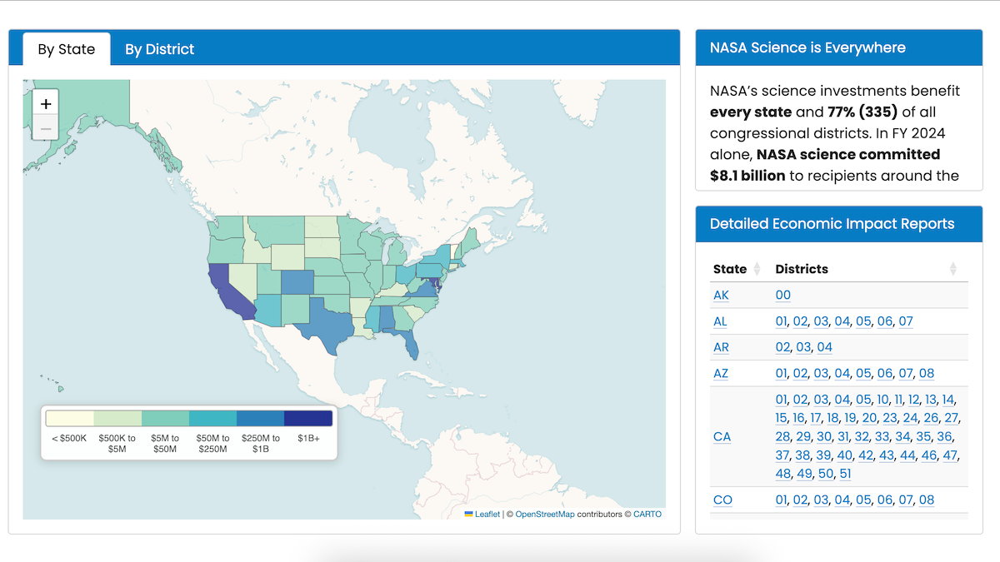

NASA Data Dashboards
Interactive tools from The Planetary Society to explore NASA spending and contract data across the United States. Select a dashboard below to get started.


NASA Science Spending Across America
Explore NASA Science Mission Directorate spending by state and congressional district. View interactive maps and download detailed economic impact reports.
Explore Dashboard
NASA Contract and Grant Cancellations
Track NASA grants and contracts terminated by the second Trump Administration. View impacted congressional districts, recipients, and contract details.
Explore Dashboard